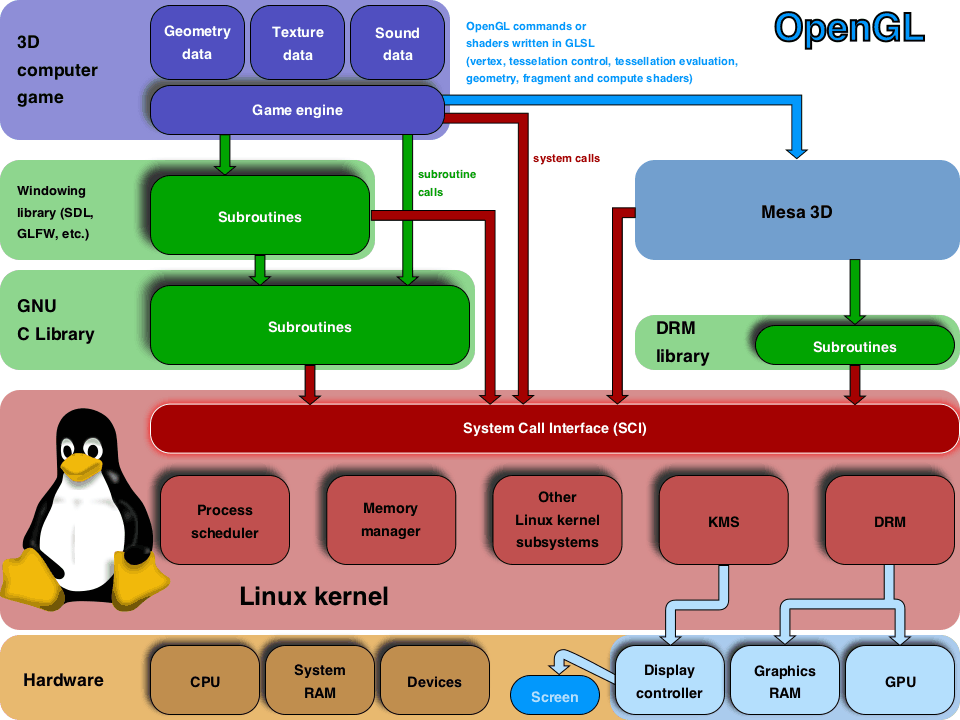
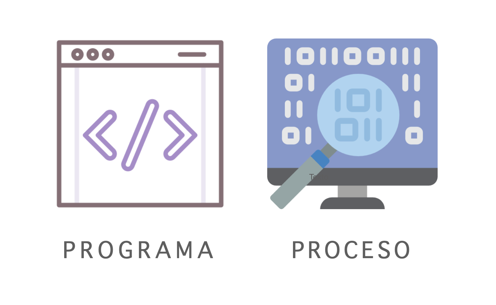

Unidad 1: Introducción a los Sistemas Operativos
¿Qué es un Sistema Operativo?
Un sistema operativo (SO) es el software fundamental que gestiona el hardware de una computadora y permite que el usuario interactúe con el sistema de forma sencilla. Actúa como un intermediario entre los programas y el hardware, permitiendo que las aplicaciones funcionen sin necesidad de conocer los detalles técnicos del equipo. Los sistemas operativos controlan tareas como la gestión de archivos, la memoria y los dispositivos de entrada y salida, facilitando el funcionamiento de las aplicaciones.

Conceptos básicos de los SO
-
Núcleo (Kernel):
Es el corazón del SO. Se encarga de controlar todo el hardware de la computadora, como la memoria, procesador, etc.
 -
Interfaz de Usuario:
Es lo que ves en la pantalla y te permite interactuar con el sistema, como las ventanas y menús.
-
Gestión de Archivos:
Organiza y guarda tus documentos, fotos, y todo tipo de archivos en el disco duro.
-
Gestión de Procesos:
Controla todas las tareas que la computadora está haciendo al mismo tiempo.
